7 Introduction to Statistics
“An approximate answer to the right problem is worth a good deal more than an exact answer to an approximate problem.”— John Tukey
“To call in the statistician after the experiment is done may be no more than asking him to perform a post-mortem examination: he may be able to say what the experiment died of.”— Ronald Fisher
First off…
Advanced R Challenges
This challenge doesn’t have much to do with stats. It’s just a fun way to vizualize work you have done. Get the documents from your publications or research papers and visualize them in a word cloud. Here’s an example:
# Wordl Challenge ---------------------------------------------------------
#Create a visual word cloud from a manuscript or publication from your own work.
library(tidyverse) #Load the tidyverse
library(textreadr) #Load the package 'textreadr'
library(car)
rawtext <- read_docx("path/to/your/file.docx") #Read a word file .doc or .docx and save it to rawtext
rawtext <- read_document("path/to/your/file.pdf") #Read a pdf and save it to rawtext
words.l <- strsplit(rawdata,"\\W") #Split the word strings on the whitespace into lists
text1 <-unlist(words.l) #Turn the list into a vector of characters
d<-as.data.frame(text1) #Save text vector as a data.frame
density<- d %>% #Using dplyr and magritr, go into your data.frame with %>%
mutate(text1 = tolower(as.character(text1))) %>% #Make all words lowercase
filter(text1 != "", text1 != grepl("[[:digit:]]+",text1)) %>% #Remove numbers and blanks
group_by(text1) %>% #Group the data by unique each word
summarize(count = n()) %>% #Count the number of words of each kind there are
filter(!grepl("[[:digit:]]+",text1), nchar(text1) > 4) %>% #Filter out words with very few characters
arrange(desc(count)) #Arrange from highest to lowest
#install.packages("wordcloud")
#install.packages("RcolorBrewer")
require('wordcloud') #Get the wordcloud package
require('RColorBrewer')
pal2 <- brewer.pal(8,"Dark2") #Create a brewer pallete ... see ?
# png("ModelingCognitiveWorkload.png", width=750,height=600) #Open a png file to write into
#call wordcloud within the png file, you could also call wordcloud outside of the png file
wordcloud(density$text1, density$count, scale=c(4,.5),min.freq=1,max.words=Inf, random.order=FALSE, rot.per=.15, colors=pal2)
# dev.off() #close the png fileWordl Website
library(rvest)
library(tidyverse)
html_reddit <- read_html("https://www.reddit.com/")
words.l <- html_reddit %>%
html_nodes("a") %>%
html_text()
text1 <- unlist(strsplit(words.l,"\\W"))
d<-as.data.frame(text1)
density<- d %>%
mutate(text1 = tolower(as.character(text1))) %>%
filter(text1 != "", text1 != grepl("[[:digit:]]+",text1)) %>%
group_by(text1) %>%
summarize(count = n()) %>%
filter(!grepl("[[:digit:]]+",text1), nchar(text1) > 3) %>%
arrange(desc(count))
require('wordcloud')
require('RColorBrewer')
pal2 <- rev(c(rep(brewer.pal(n = 9, "Greens"),15),rep(brewer.pal(n = 8, "Purples"),16),
"#FEC44F","#CC4C02"))
# png("wordcloud_reddit.png", width=750,height=700)
wordcloud(density$text1, density$count, scale=c(4,.5),min.freq=1,max.words=Inf,
random.order=F, rot.per=.15, colors=pal2,ordered.colors = T)
# dev.off()
Stats
rm(list = ls());par(mfrow = c(1,1))
require(tidyverse)
#> Loading required package: tidyverse
#> ── Attaching packages ─────────────────────────────────────── tidyverse 1.3.1 ──
#> ✓ ggplot2 3.3.5 ✓ purrr 0.3.4
#> ✓ tibble 3.1.6 ✓ dplyr 1.0.7
#> ✓ tidyr 1.1.3 ✓ stringr 1.4.0
#> ✓ readr 1.4.0 ✓ forcats 0.5.1
#> ── Conflicts ────────────────────────────────────────── tidyverse_conflicts() ──
#> x dplyr::filter() masks stats::filter()
#> x dplyr::lag() masks stats::lag()
#install.packages("lsr")7.1 Steps of Visualization
From Navarro, Page 105…
7.1.1 Descriptive Stats
load("~/Dropbox/Teaching/MIST130DatAnOpt_22/books_resources/data/aflsmall.Rdata")
library(lsr)
lsr::who()
#> -- Name -- -- Class -- -- Size --
#> afl.finalists factor 400
#> afl.margins numeric 176The afl.margins variable contains the winning margin (number of points) for all 176 home and away games played during the 2010 season.
Quick Afl rules: There are 4 posts, to score: - Goal (through the two middle posts): 6 points - Behind (through the outside posts): 1 point - Ball touched (through any sets of posts): 1 point - Hits one of the middle posts: 1 point
(Scores are high as you will see)
Here’s a vector of winner-loser scores for 176 games in 2010 afl.margins
Let’s make sense of this mess.
hist(afl.margins, breaks=10)
stem(afl.margins)
#>
#> The decimal point is 1 digit(s) to the right of the |
#>
#> 0 | 001111223333333344567788888999999
#> 1 | 0000011122234456666899999
#> 2 | 00011222333445566667788999999
#> 3 | 01223555566666678888899
#> 4 | 012334444477788899
#> 5 | 00002233445556667
#> 6 | 0113455678
#> 7 | 01123556
#> 8 | 122349
#> 9 | 458
#> 10 | 148
#> 11 | 6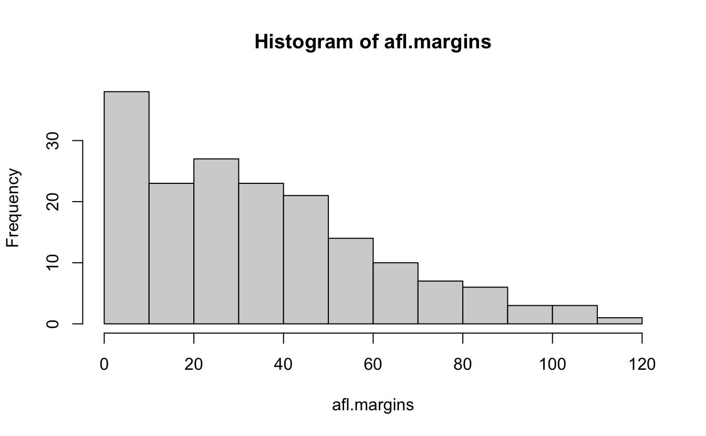
7.1.2 Measures of Central Tendency
mean calculation
OR
Challenge 1 Get the mean of the first five game margins.
Challenge 2 Get the median game margin.
Great metaphor for the two: The mean is basically the “centre of gravity” of the data set. If you imagine that the histogram of the data is a solid object, then the point on which you could balance it (as if on a see-saw) is the mean. In contrast, the median is the middle observation. Half of the observations are smaller, and half of the observations are larger.
You can trim the mean:
mean( x = afl.margins, trim = .05) #Trims 5% of the data off either side
#> [1] 33.8
.05*176 #How many scores are trimmed total
#> [1] 8.8Get the Mode
You can create the function from just doing the math.
getmode <- function(v) {
uniqv <- unique(v)
uniqv[which.max(tabulate(match(v, uniqv)))]
}
# uniquv <- unique(afl.margins)
# uniquv[which.max(tabulate(match(afl.margins,uniquv)))]
getmode(afl.margins)
#> [1] 3Mode on a character vector?
lsr::modeOf(afl.finalists)
#> [1] "Geelong"
table(afl.finalists)
#> afl.finalists
#> Adelaide Brisbane Carlton Collingwood
#> 26 25 26 28
#> Essendon Fitzroy Fremantle Geelong
#> 32 0 6 39
#> Hawthorn Melbourne North Melbourne Port Adelaide
#> 27 28 28 17
#> Richmond St Kilda Sydney West Coast
#> 6 24 26 38
#> Western Bulldogs
#> 24How often does the mode occur?
7.1.3 Measures of Variability
max(afl.margins)
#> [1] 116
min(afl.margins)
#> [1] 0
range( afl.margins )
#> [1] 0 116
quantile( x = afl.margins, probs = .5)
#> 50%
#> 30.5
quantile(afl.margins, probs = c(.25,.5,.75))
#> 25% 50% 75%
#> 12.8 30.5 50.5
IQR( x = afl.margins ) # Inter-quartile range
#> [1] 37.8OR
Mean absolute deviation
what does aad do?
hint:
aad #You can look into functions by not adding the ()
#> function (x, na.rm = FALSE)
#> {
#> if (!methods::is(x, "numeric") & !methods::is(x, "integer")) {
#> stop("\"x\" must be numeric")
#> }
#> if (!methods::is(na.rm, "logical") | length(na.rm) != 1) {
#> stop("\"na.rm\" must be a single logical value")
#> }
#> if (na.rm) {
#> x <- x[!is.na(x)]
#> }
#> y <- mean(abs(x - mean(x)))
#> return(y)
#> }
#> <bytecode: 0x7fa22388bbd8>
#> <environment: namespace:lsr>Variance (mean squared deviation)
mean( (afl.margins - mean(afl.margins) )^2)
#> [1] 676
var(afl.margins)
#> [1] 680
sd(afl.margins)
#> [1] 26.1Challenge 3 Show the standard deviation in a graph.
Challenge 4 Calculate histogram, but do not draw it.
Skew and kurtosis from psych library
library(psych)
#>
#> Attaching package: 'psych'
#> The following objects are masked from 'package:ggplot2':
#>
#> %+%, alpha
skew(afl.margins)
#> [1] 0.767
kurtosi(afl.margins)
#> [1] 0.0296q <- rbind(c("too flat", "platykurtic", "negative"),
rbind(c("just pointy enough", "mesokurtic", "zero"),
c("too pointy", "leptokurtic", "positive")))
colnames(q) <- c("informal term", "technical name", "kurtosis value")
data.frame(q)
# informal.term technical.name kurtosis.value
# 1 too flat platykurtic negative
# 2 just pointy enough mesokurtic zero
# 3 too pointy leptokurtic positiveGet it all
7.2 Clinical Trial Example
library(psych)
#New dataset
load("~/Dropbox/Teaching/MIST130DatAnOpt_22/books_resources/data/clinicaltrial.Rdata")
psych::describe(clin.trial)
#> vars n mean sd median trimmed mad min max range skew kurtosis
#> drug* 1 18 2.00 0.84 2.00 2.00 1.48 1.0 3.0 2.0 0.00 -1.66
#> therapy* 2 18 1.50 0.51 1.50 1.50 0.74 1.0 2.0 1.0 0.00 -2.11
#> mood.gain 3 18 0.88 0.53 0.85 0.88 0.67 0.1 1.8 1.7 0.13 -1.44
#> se
#> drug* 0.20
#> therapy* 0.12
#> mood.gain 0.13
describeBy(clin.trial, group = c("drug","therapy"))
#>
#> Descriptive statistics by group
#> drug: placebo
#> therapy: no.therapy
#> vars n mean sd median trimmed mad min max range skew kurtosis se
#> drug* 1 3 1.0 0.0 1.0 1.0 0.0 1.0 1.0 0.0 NaN NaN 0.00
#> therapy* 2 3 1.0 0.0 1.0 1.0 0.0 1.0 1.0 0.0 NaN NaN 0.00
#> mood.gain 3 3 0.3 0.2 0.3 0.3 0.3 0.1 0.5 0.4 0 -2.33 0.12
#> ------------------------------------------------------------
#> drug: anxifree
#> therapy: no.therapy
#> vars n mean sd median trimmed mad min max range skew kurtosis se
#> drug* 1 3 2.0 0.0 2.0 2.0 0.0 2.0 2.0 0.0 NaN NaN 0.00
#> therapy* 2 3 1.0 0.0 1.0 1.0 0.0 1.0 1.0 0.0 NaN NaN 0.00
#> mood.gain 3 3 0.4 0.2 0.4 0.4 0.3 0.2 0.6 0.4 0 -2.33 0.12
#> ------------------------------------------------------------
#> drug: joyzepam
#> therapy: no.therapy
#> vars n mean sd median trimmed mad min max range skew kurtosis se
#> drug* 1 3 3.00 0.00 3.0 3.00 0.00 3.0 3.0 0.0 NaN NaN 0.00
#> therapy* 2 3 1.00 0.00 1.0 1.00 0.00 1.0 1.0 0.0 NaN NaN 0.00
#> mood.gain 3 3 1.47 0.21 1.4 1.47 0.15 1.3 1.7 0.4 0.29 -2.33 0.12
#> ------------------------------------------------------------
#> drug: placebo
#> therapy: CBT
#> vars n mean sd median trimmed mad min max range skew kurtosis se
#> drug* 1 3 1.0 0.0 1.0 1.0 0.00 1.0 1.0 0.0 NaN NaN 0.00
#> therapy* 2 3 2.0 0.0 2.0 2.0 0.00 2.0 2.0 0.0 NaN NaN 0.00
#> mood.gain 3 3 0.6 0.3 0.6 0.6 0.44 0.3 0.9 0.6 0 -2.33 0.17
#> ------------------------------------------------------------
#> drug: anxifree
#> therapy: CBT
#> vars n mean sd median trimmed mad min max range skew kurtosis
#> drug* 1 3 2.00 0.00 2.0 2.00 0.00 2.0 2.0 0.0 NaN NaN
#> therapy* 2 3 2.00 0.00 2.0 2.00 0.00 2.0 2.0 0.0 NaN NaN
#> mood.gain 3 3 1.03 0.21 1.1 1.03 0.15 0.8 1.2 0.4 -0.29 -2.33
#> se
#> drug* 0.00
#> therapy* 0.00
#> mood.gain 0.12
#> ------------------------------------------------------------
#> drug: joyzepam
#> therapy: CBT
#> vars n mean sd median trimmed mad min max range skew kurtosis se
#> drug* 1 3 3.0 0.00 3.0 3.0 0.00 3.0 3.0 0.0 NaN NaN 0.00
#> therapy* 2 3 2.0 0.00 2.0 2.0 0.00 2.0 2.0 0.0 NaN NaN 0.00
#> mood.gain 3 3 1.5 0.26 1.4 1.5 0.15 1.3 1.8 0.5 0.32 -2.33 0.15
by(data = clin.trial, INDICES = clin.trial$therapy, FUN = describe)
#> clin.trial$therapy: no.therapy
#> vars n mean sd median trimmed mad min max range skew kurtosis se
#> drug* 1 9 2.00 0.87 2.0 2.00 1.48 1.0 3.0 2.0 0.00 -1.81 0.29
#> therapy* 2 9 1.00 0.00 1.0 1.00 0.00 1.0 1.0 0.0 NaN NaN 0.00
#> mood.gain 3 9 0.72 0.59 0.5 0.72 0.44 0.1 1.7 1.6 0.51 -1.59 0.20
#> ------------------------------------------------------------
#> clin.trial$therapy: CBT
#> vars n mean sd median trimmed mad min max range skew kurtosis
#> drug* 1 9 2.00 0.87 2.0 2.00 1.48 1.0 3.0 2.0 0.00 -1.81
#> therapy* 2 9 2.00 0.00 2.0 2.00 0.00 2.0 2.0 0.0 NaN NaN
#> mood.gain 3 9 1.04 0.45 1.1 1.04 0.44 0.3 1.8 1.5 -0.03 -1.12
#> se
#> drug* 0.29
#> therapy* 0.00
#> mood.gain 0.15
by(data = clin.trial, INDICES = clin.trial$therapy, FUN = summary)
#> clin.trial$therapy: no.therapy
#> drug therapy mood.gain
#> placebo :3 no.therapy:9 Min. :0.100
#> anxifree:3 CBT :0 1st Qu.:0.300
#> joyzepam:3 Median :0.500
#> Mean :0.722
#> 3rd Qu.:1.300
#> Max. :1.700
#> ------------------------------------------------------------
#> clin.trial$therapy: CBT
#> drug therapy mood.gain
#> placebo :3 no.therapy:0 Min. :0.30
#> anxifree:3 CBT :9 1st Qu.:0.80
#> joyzepam:3 Median :1.10
#> Mean :1.04
#> 3rd Qu.:1.30
#> Max. :1.807.3 Correlations
Here is an example of correlations with the mtcars dataset from datasets.
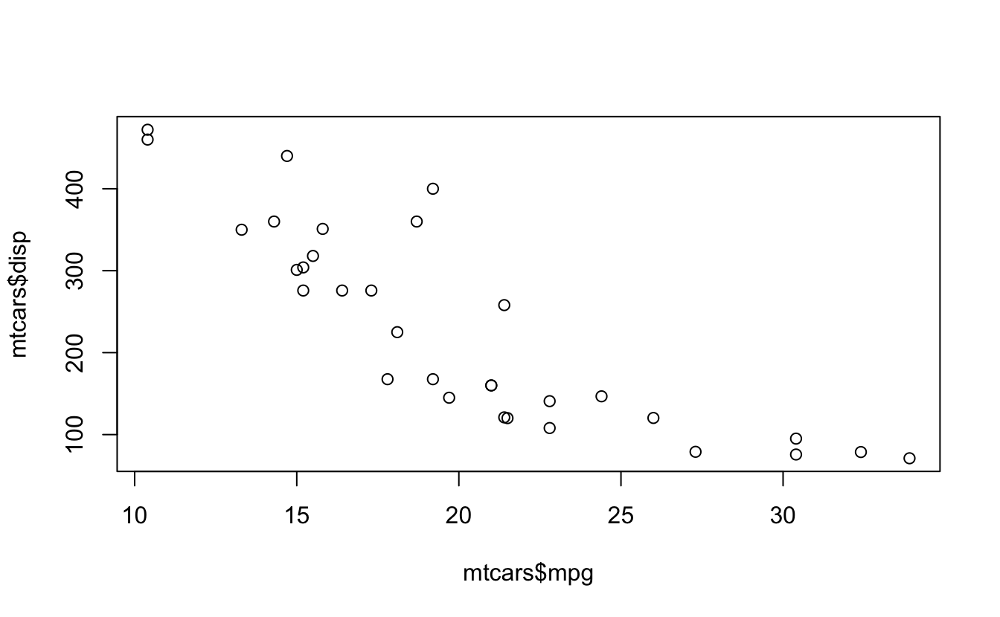
Here’s the work dataset from Navarro.
load("~/Dropbox/Teaching/MIST130DatAnOpt_22/books_resources/data/work.Rdata")
head(work)
#> hours tasks pay day weekday week day.type
#> 1 7.2 14 41 1 Tuesday 1 weekday
#> 2 7.4 11 39 2 Wednesday 1 weekday
#> 3 6.6 14 13 3 Thursday 1 weekday
#> 4 6.5 22 47 4 Friday 1 weekday
#> 5 3.1 5 4 5 Saturday 1 weekend
#> 6 3.0 7 12 6 Sunday 1 weekendand here’s a correlation between work hours and pay.
cor(work$hours, work$pay)
#> [1] 0.76
plot(work$hours, work$pay)
lsr::correlate(work) #Gives a correlation table
#>
#> CORRELATIONS
#> ============
#> - correlation type: pearson
#> - correlations shown only when both variables are numeric
#>
#> hours tasks pay day weekday week day.type
#> hours . 0.800 0.760 -0.049 . 0.018 .
#> tasks 0.800 . 0.720 -0.072 . -0.013 .
#> pay 0.760 0.720 . 0.137 . 0.196 .
#> day -0.049 -0.072 0.137 . . 0.990 .
#> weekday . . . . . . .
#> week 0.018 -0.013 0.196 0.990 . . .
#> day.type . . . . . . .
lsr::correlate(work, corr.method = "spearman")
#>
#> CORRELATIONS
#> ============
#> - correlation type: spearman
#> - correlations shown only when both variables are numeric
#>
#> hours tasks pay day weekday week day.type
#> hours . 0.805 0.745 -0.047 . 0.010 .
#> tasks 0.805 . 0.730 -0.068 . -0.008 .
#> pay 0.745 0.730 . 0.094 . 0.154 .
#> day -0.047 -0.068 0.094 . . 0.990 .
#> weekday . . . . . . .
#> week 0.010 -0.008 0.154 0.990 . . .
#> day.type . . . . . . .
cor.test(mtcars$mpg, mtcars$disp) #For paired samples
#>
#> Pearson's product-moment correlation
#>
#> data: mtcars$mpg and mtcars$disp
#> t = -9, df = 30, p-value = 9e-10
#> alternative hypothesis: true correlation is not equal to 0
#> 95 percent confidence interval:
#> -0.923 -0.708
#> sample estimates:
#> cor
#> -0.848
cor.test(mtcars$wt, mtcars$disp)
#>
#> Pearson's product-moment correlation
#>
#> data: mtcars$wt and mtcars$disp
#> t = 11, df = 30, p-value = 1e-11
#> alternative hypothesis: true correlation is not equal to 0
#> 95 percent confidence interval:
#> 0.781 0.944
#> sample estimates:
#> cor
#> 0.888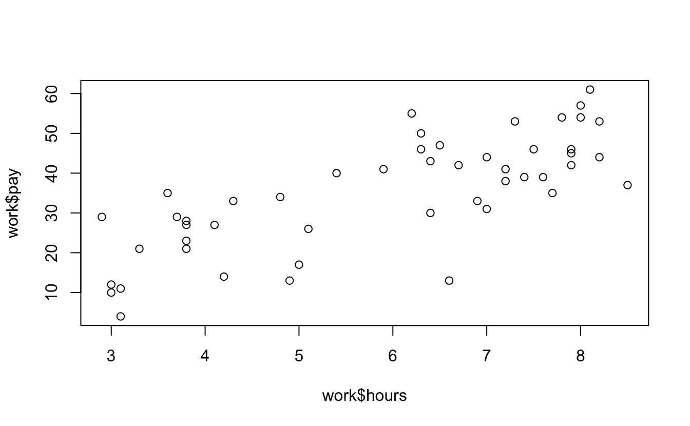
7.5 T.TEST
Load harpo dataset
…and describe it:
head(harpo)
#> grade tutor
#> 1 65 Anastasia
#> 2 72 Bernadette
#> 3 66 Bernadette
#> 4 74 Anastasia
#> 5 73 Anastasia
#> 6 71 Bernadette
describeBy(harpo,group = "tutor")
#>
#> Descriptive statistics by group
#> tutor: Anastasia
#> vars n mean sd median trimmed mad min max range skew kurtosis se
#> grade 1 15 74.5 9 76 74.8 8.9 55 90 35 -0.32 -0.51 2.32
#> tutor* 2 15 1.0 0 1 1.0 0.0 1 1 0 NaN NaN 0.00
#> ------------------------------------------------------------
#> tutor: Bernadette
#> vars n mean sd median trimmed mad min max range skew kurtosis se
#> grade 1 18 69.1 5.77 69 69.2 5.19 56 79 23 -0.48 -0.39 1.36
#> tutor* 2 18 2.0 0.00 2 2.0 0.00 2 2 0 NaN NaN 0.00Here’s the independent samples t.test:
lsr::independentSamplesTTest(formula = grade~tutor,
data = harpo,
var.equal = T)
#>
#> Student's independent samples t-test
#>
#> Outcome variable: grade
#> Grouping variable: tutor
#>
#> Descriptive statistics:
#> Anastasia Bernadette
#> mean 74.533 69.056
#> std dev. 8.999 5.775
#>
#> Hypotheses:
#> null: population means equal for both groups
#> alternative: different population means in each group
#>
#> Test results:
#> t-statistic: 2.12
#> degrees of freedom: 31
#> p-value: 0.043
#>
#> Other information:
#> two-sided 95% confidence interval: [0.197, 10.759]
#> estimated effect size (Cohen's d): 0.74OR
t.test(grade~tutor, data = harpo, var.equal = T, paired = F, conf.level = .95)
#>
#> Two Sample t-test
#>
#> data: grade by tutor
#> t = 2, df = 31, p-value = 0.04
#> alternative hypothesis: true difference in means between group Anastasia and group Bernadette is not equal to 0
#> 95 percent confidence interval:
#> 0.197 10.759
#> sample estimates:
#> mean in group Anastasia mean in group Bernadette
#> 74.5 69.17.7 Assumptions
Check some plots, and you can look at normality.
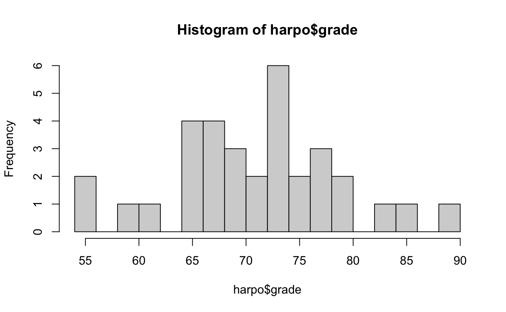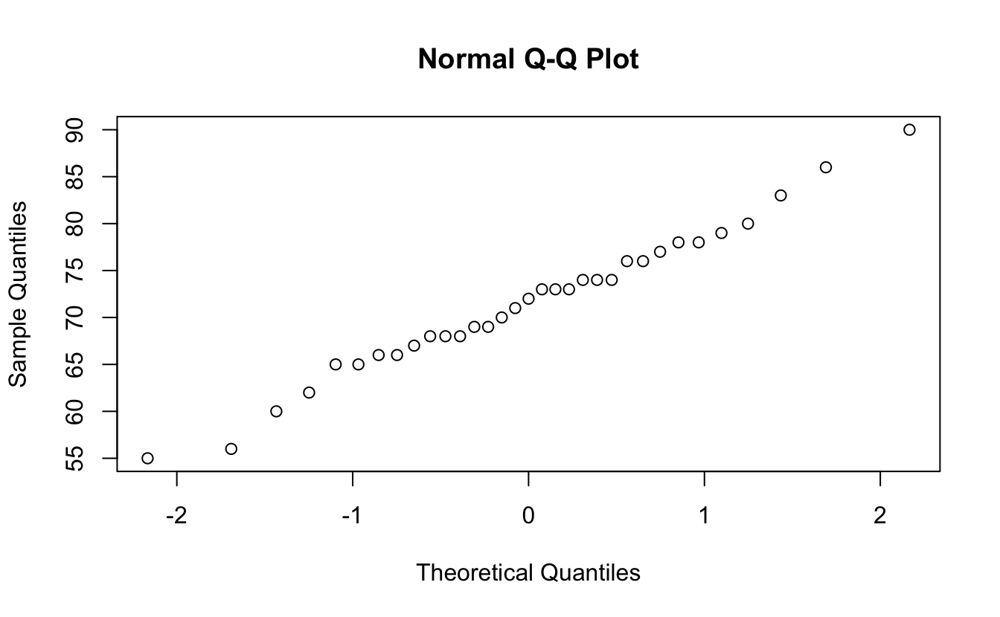
7.7.1 Shapiro normality test
shapiro.test(harpo$grade)
#>
#> Shapiro-Wilk normality test
#>
#> data: harpo$grade
#> W = 1, p-value = 1Or use wilcoxon test for non-normal samples:
wilcox.test(grade~tutor, data = harpo)
#> Warning in wilcox.test.default(x = c(65, 74, 73, 83, 76, 65, 86, 70, 80, :
#> cannot compute exact p-value with ties
#>
#> Wilcoxon rank sum test with continuity correction
#>
#> data: grade by tutor
#> W = 190, p-value = 0.05
#> alternative hypothesis: true location shift is not equal to 07.8 One-Way ANOVA
back to the clin.trial dataset
aggregate(mood.gain ~drug, clin.trial, mean)
#> drug mood.gain
#> 1 placebo 0.450
#> 2 anxifree 0.717
#> 3 joyzepam 1.483
aggregate(mood.gain ~drug, clin.trial, sd)
#> drug mood.gain
#> 1 placebo 0.281
#> 2 anxifree 0.392
#> 3 joyzepam 0.214Here’s a plot of means with sd errorbars.
clin.trial %>%
group_by(drug) %>%
summarise(m.mood = mean(mood.gain), sd.mood = sd(mood.gain)) %>%
ggplot(aes(x = drug, y = m.mood)) + geom_point() + theme_classic() +
coord_cartesian(ylim = c(0,2)) +
geom_errorbar(aes(ymax = m.mood + sd.mood,
ymin = m.mood - sd.mood), width = .25)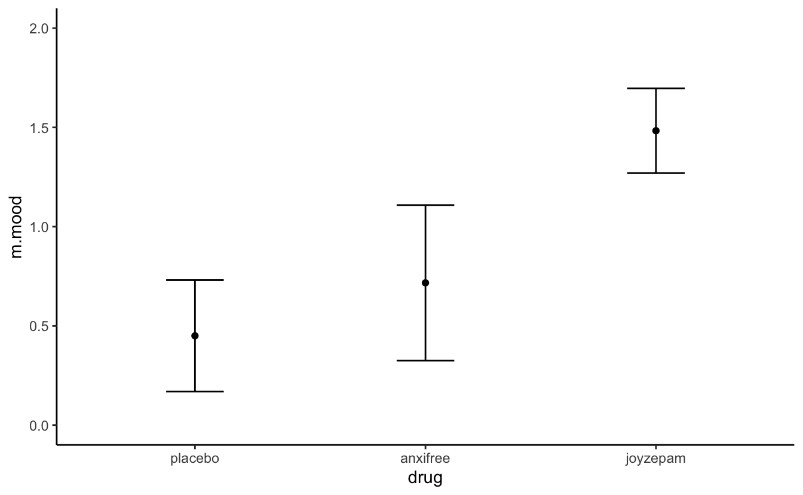
…and now for the anova…
What is this my.anova object?
class(my.anova)
#> [1] "aov" "lm"
names(my.anova)
#> [1] "coefficients" "residuals" "effects" "rank"
#> [5] "fitted.values" "assign" "qr" "df.residual"
#> [9] "contrasts" "xlevels" "call" "terms"
#> [13] "model"
summary(my.anova)
#> Df Sum Sq Mean Sq F value Pr(>F)
#> drug 2 3.45 1.727 18.6 8.6e-05 ***
#> Residuals 15 1.39 0.093
#> ---
#> Signif. codes: 0 '***' 0.001 '**' 0.01 '*' 0.05 '.' 0.1 ' ' 1Here’s a test of effect size for the ANOVA
and posthoc pairwise comparisons of levels of a factor
lsr::posthocPairwiseT(my.anova, p.adjust.method = "none")
#>
#> Pairwise comparisons using t tests with pooled SD
#>
#> data: mood.gain and drug
#>
#> placebo anxifree
#> anxifree 0.2 -
#> joyzepam 3e-05 6e-04
#>
#> P value adjustment method: noneor corrected for assumptions
lsr::posthocPairwiseT(my.anova, p.adjust.method = "bonferroni")
#>
#> Pairwise comparisons using t tests with pooled SD
#>
#> data: mood.gain and drug
#>
#> placebo anxifree
#> anxifree 0.451 -
#> joyzepam 9e-05 0.002
#>
#> P value adjustment method: bonferroniand a test for homogeneity of variance from the car package.
require(car) #Test for homogeneity of variance
#> Loading required package: car
#> Loading required package: carData
#>
#> Attaching package: 'car'
#> The following object is masked from 'package:psych':
#>
#> logit
#> The following object is masked from 'package:dplyr':
#>
#> recode
#> The following object is masked from 'package:purrr':
#>
#> some
car::leveneTest(my.anova)
#> Levene's Test for Homogeneity of Variance (center = median)
#> Df F value Pr(>F)
#> group 2 1.47 0.26
#> 157.9 AAAANNDD Regression
load("~/Dropbox/Teaching/MIST130DatAnOpt_22/books_resources/data/parenthood.Rdata")
head(parenthood)
#> dan.sleep baby.sleep dan.grump day
#> 1 7.59 10.18 56 1
#> 2 7.91 11.66 60 2
#> 3 5.14 7.92 82 3
#> 4 7.71 9.61 55 4
#> 5 6.68 9.75 67 5
#> 6 5.99 5.04 72 6Here’s the linear model.
You can plot it and print a summary.
plot(regres1)
summary(regres1)
#>
#> Call:
#> lm(formula = dan.grump ~ dan.sleep, data = parenthood)
#>
#> Residuals:
#> Min 1Q Median 3Q Max
#> -11.025 -2.213 -0.399 2.681 11.750
#>
#> Coefficients:
#> Estimate Std. Error t value Pr(>|t|)
#> (Intercept) 125.956 3.016 41.8 <2e-16 ***
#> dan.sleep -8.937 0.429 -20.9 <2e-16 ***
#> ---
#> Signif. codes: 0 '***' 0.001 '**' 0.01 '*' 0.05 '.' 0.1 ' ' 1
#>
#> Residual standard error: 4.33 on 98 degrees of freedom
#> Multiple R-squared: 0.816, Adjusted R-squared: 0.814
#> F-statistic: 435 on 1 and 98 DF, p-value: <2e-16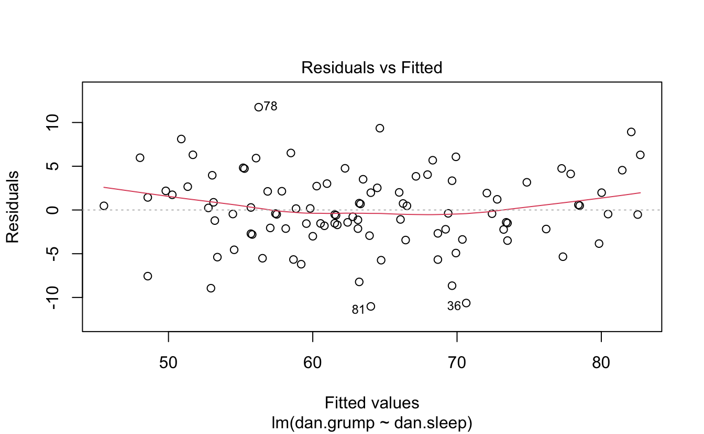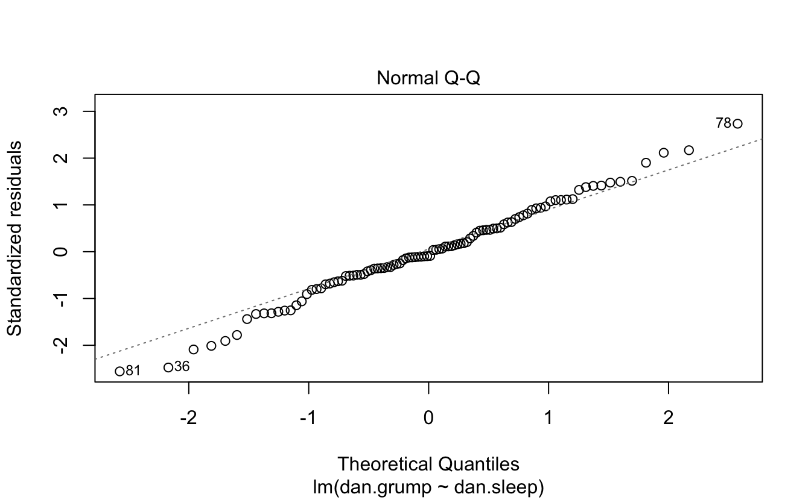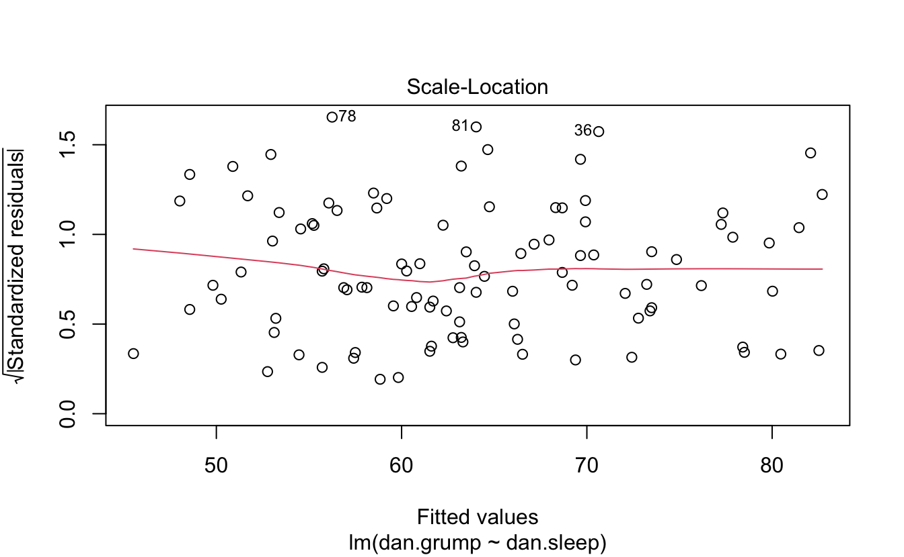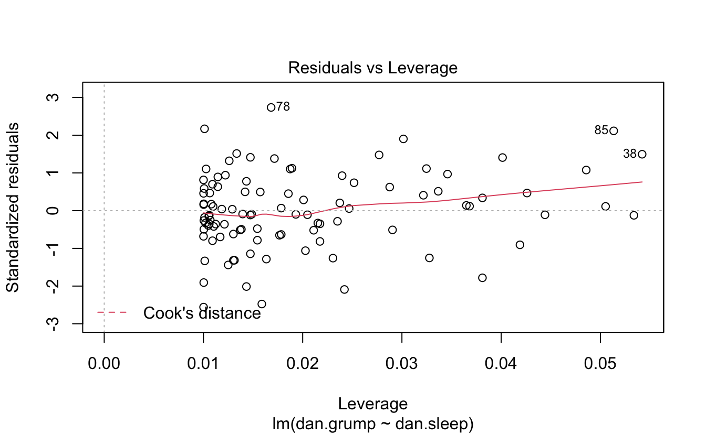
Here’s a model with an interaction.
Finally, you can plot 3 predictors in a 3d plot.
scatter3d(z = parenthood$baby.sleep,
x = parenthood$dan.grump,
y = parenthood$dan.sleep)
#> Loading required namespace: rgl
#> Loading required namespace: mgcvThese statistics are presented very quickly and have a large background of omitted information, assumptions, and history. You should seek out readings or classes that focus on statistics before employing these tests. This lesson only covers how to apply these tests to data in the context of R.
7.10 Solutions
Challenge 1 Get the mean of the first five game margins.
Challenge 2 Get the median game margin.
…pretty close…
Challenge 3 Show the standard deviation in a graph.
my_hist=hist(afl.margins, breaks=10 , plot=F)
# Color vector
my_color= ifelse(my_hist$breaks < (mean(afl.margins) - sd(afl.margins)), "purple" , ifelse (my_hist$breaks >=(mean(afl.margins) + sd(afl.margins)), "purple", rgb(0.2,0.2,0.2,0.2) ))
# Final plot
plot(my_hist, col=my_color , border=F , main="" , xlab="value of the variable", xlim=c(0,125))
abline(v = mean(afl.margins), col = "blue")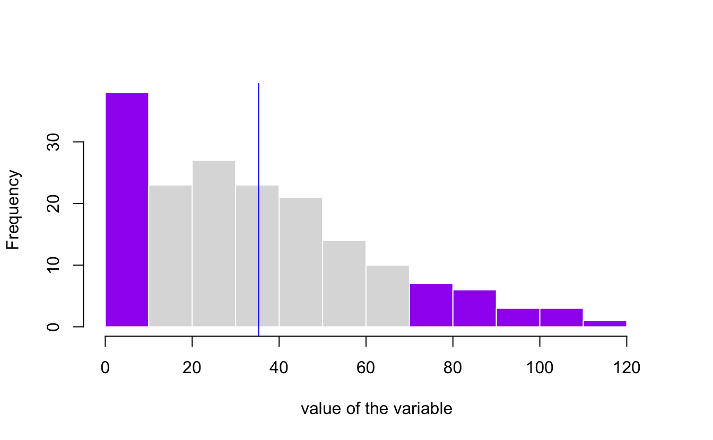
Challenge 4 Calculate histogram, but do not draw it.
hist(afl.margins, breaks=10 , plot=F)
#> $breaks
#> [1] 0 10 20 30 40 50 60 70 80 90 100 110 120
#>
#> $counts
#> [1] 38 23 27 23 21 14 10 7 6 3 3 1
#>
#> $density
#> [1] 0.021591 0.013068 0.015341 0.013068 0.011932 0.007955 0.005682 0.003977
#> [9] 0.003409 0.001705 0.001705 0.000568
#>
#> $mids
#> [1] 5 15 25 35 45 55 65 75 85 95 105 115
#>
#> $xname
#> [1] "afl.margins"
#>
#> $equidist
#> [1] TRUE
#>
#> attr(,"class")
#> [1] "histogram"